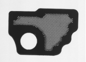
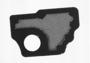
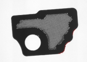
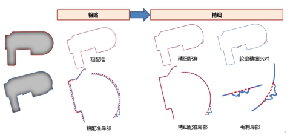
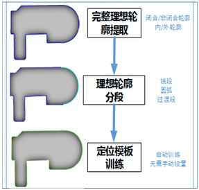
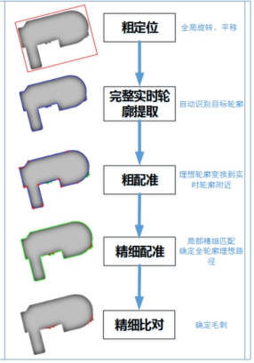

毛刺是产品的一种常见缺陷，主要是在产品成型过程中，由于工艺等原因，在轮廓边缘处剩下的残留部分，如图1所示。毛刺切割是一种广泛的实际应用项目，主要是通过视觉给出实际轮廓的精确位置，引导激光沿产品实际边缘路径进行切割，去除产品边缘毛刺。
图1是一种典型检测案例其中：(a)为训练原图；(b)为待检测图，边缘存在部分毛刺；©为检测结果；可以看到该工具将产品右下角边缘的毛刺部分很好的检测的出来。
  
| 分类 | 参数名称 | 参数描述 |
|---|---|---|
| 属性窗口 | 检测轮廓个数 | 待检测产品需要检测的轮廓个数，需要注意的是，此参数应该在高级界面进行调整，对应的是添加/删除检测轮廓（注意箭头设置时，最好垂直于边缘）。 |
| 轮廓提取模式 | 主要是用于在提取时，区分目标和背景。 | |
| 轮廓阈值 | 区分目标背景的阈值。 | |
| 是否启用卡尺 | 启用卡尺会使轮廓更为精准（内部参数，无需手动设置卡尺）。 | |
| 接收阈值 | 定位结果匹配评价参数。 | |
| 定位最大旋转角度 | 定位时可以接受的目标相对模板的旋转角度范围，取值范围[-180, 180]，且应大于等于定位最小旋转角度。 | |
| 定位最小旋转角度 | 定位时可以接受的目标相对模板的旋转角度范围，取值范围[-180, 180]，且应小于等于定位最大旋转角度。 | |
| 是否滤波 | 开启后，设置的参数为滤波半宽。 | |
| 滤波半宽 | 边缘进行滤波操作，滤波器半宽尺寸与图像边缘的锐度有关系。图像边缘的锐度越高，滤波器半宽尺寸可以设置的越小。滤波器半宽尺寸的取值范围为1~∞。 | |
| 曲率链码间隔 | 与轮廓体提取时整个图像边缘的平滑、尖锐程度有关。 | |
| 曲率阈值 | 曲率分段时设置的阈值，用于将轮廓分割成线段/圆弧段/连续曲率段。 | |
| 过渡区域分割模式 | 理想的情况下，直线边缘与圆弧边缘之间可以找到断点，即曲率突变点，但是实际情况下，很难准确的确认出该断点，过度区域就是找到一个区域，这个区域既不是圆弧也不是直线，仅仅作为一个区分区域。固定区域就是设置一个固定长度的区域作为过度区域，而固定偏差则是根据周围曲率来进行判断是否属于过度区域，固定比例则跟起始的曲率有关。 | |
| 固定长度 | 过渡区域分割模式选择“固定长度模式”时的应该输入的参数值 | |
| 固定差值 | 过渡区域分割模式选择“固定差值模式”时的应该输入的参数值 | |
| 固定比例 | 过渡区域分割模式选择“固定比例模式”时的应该输入的参数值 | |
| 曲率分段偏差阈值 | 对找到的区域重新进行一次分段，使轮廓分段更为精准。 | |
| 直线拟合RMS误差阈值 | 都是对分割的曲线进行判断的参数，一般拟合之后会输出一个拟合的RMS误差，用来评价拟合的好坏，其值越小，则拟合越优。 设置该阈值之后，则表示拟合结果要达到预设阈值，否则继续拟合，阈值越小，则算法耗时可能越久。 一方面需要保证RMS误差不能过大，一方面拟合的点到拟合曲线（直线或圆弧）的最大距离不能过大； 如果满足这两方面阈值，则拟合曲线被判断为对应直线或圆，判断时先判定直线阈值，若满足则为直线，若不满足但满足圆的阈值条件就是圆；若同时不满足直线或圆，就会对该曲线段进行细化，然后细化的曲线重复上面的判定，直到所有分割曲线都满足阈值要求。 取值范围[0, +∞)。 |
|
| 直线拟合距离偏差阈值 | 同上 | |
| 圆拟合RMS误差阈值 | 同上 | |
| 圆拟合距离偏差阈值 | 同上 | |
| 匹配最小覆盖率 | 存在匹配点的训练点个数与训练点总数的比值。 | |
| 捕获半径 | 指训练点与实时点匹配时两点相距的最大距离。 | |
| 旋转范围 | 匹配工具可以进行旋转维度的搜索，需输入搜索范围如-15到15度。 | |
| 距离阈值 | 用于实时轮廓与理想轮廓之间偏差的比较，确定出毛刺出现位置。取值范围[0, +∞)。 | |
| 扩散距离 | 用于实时轮廓与理想轮廓之间偏差的比较，确定出毛刺出现位置 | |
| 是否启用拟合 | 不启用，最终的结果是根据轮廓提取的结果去规划理想路径启用的话，是拟合之后再给结果。 | |
| 检测模式 | 轮廓模式没有缺陷数量输出，此模式下不执行缺陷检测，只是规划出理想路径。缺陷模式将输出缺陷数量，并将缺陷部分轮廓结果输出。 | |
| 图像窗口 | 轮廓检测 | 调整轮廓检测起始点，同高级界面添加/删除检测轮廓。 |
| 数据链 | 输入图像 | 用来实时搜索的图像。 |
| 高级界面 | 获取训练图像 | 获取训练所需要的图像 |
| 输入图像 | 获取训练图像时从参数链的输入图像获取 | |
| 加载图像 | 获取训练图像时从外部文件路径加载图像 |
| 分类 | 参数名称 | 参数描述 |
|---|---|---|
| 监视窗口 | 输入图像 | 输入图像宽度、高度、像素大小 。 |
| 缺陷个数 | 检测的结果个数。 | |
| 检测结果 | 检测的结果。 | |
| 工具执行结果 | 工具执行结果。 | |
| 工具执行时间 | 工具执行时间。 | |
| 图像窗口 | 检测结果 | 检测到的带有毛刺的边缘显示。 |
| 输入图像 | 待检测的图像。 | |
| 执行结果 | 显示工具执行结果，执行成功显示“OK”，执行失败显示“NG”，同监视窗口的执行结果参数。 |
轮廓检测工具的基本原理是通过轮廓比对的思想完成轮廓凸起缺陷的检测，并规划轮廓理想路径。如图3所示，具体来说，训练阶段，学习无毛刺产品图像，获得理想产品轮廓。实时检测阶段，将理想轮廓与实时轮廓进行粗配准，然后在局部轮廓通过精细配准获得理想轮廓路径，以应对产品局部变形的情况，最后通过轮廓精细比对获得毛刺部分轮廓路径。

轮廓检测工具检测流程主要包括以下步骤，如下图所示：


(1). 轮廓提取：提取完整的目标轮廓信息，包括理想轮廓和实时轮廓。
(2). 轮廓分段：提取理想轮廓端点，将理想轮廓分割成一系列有意义的段（线段、圆弧、曲率连续段），方便后续进行精细配准。
(3). 定位模板训练：自动生成几何定位工具模板。
(4). 粗定位：采用几何定位工具对实时产品进行初定位，确定产品模板轮廓大致位置。
(5). 轮廓粗配准：根据初定位结果，将实时轮廓与训练的理想轮廓进行粗略配准。
(6). 精细配准：考虑到产品局部变形，在轮廓的各个局部进行精细配准，得到精确的理想全轮廓路径。
(7). 精细比对：在轮廓的每个微小的局部进行轮廓偏差比较，从而确认毛刺具体位置。
其中，轮廓分段和定位模板训练主要在训练过程中，粗定位、粗配准和精细配准、比对是在实时检测阶段。
向量的数量影响轮廓的个数，轮廓的个数会影响缺陷的个数。
例如：当对同一轮廓添加了多个向量的时候，检测出来的缺陷个数会增加，这是因为对同一轮廓做了多次检测的结果，实际用的时候，应该避免对同一个轮廓进行多次检测。
向量的主要作用是用来确定轮廓的位置，所以在轮廓不是很复杂的情况下，建议使用合理的向量个数。
参见“\Samples\毛刺切割工具.gvp”。